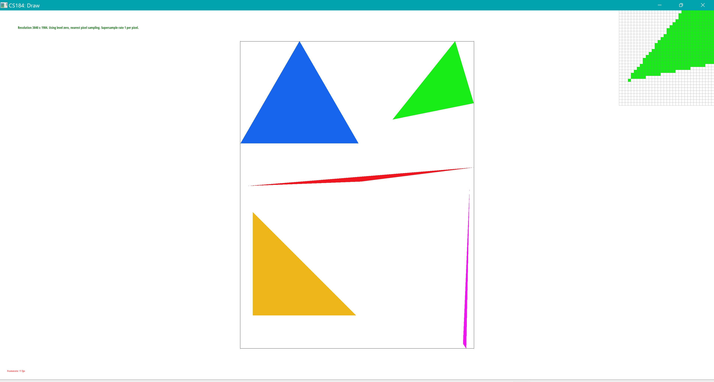
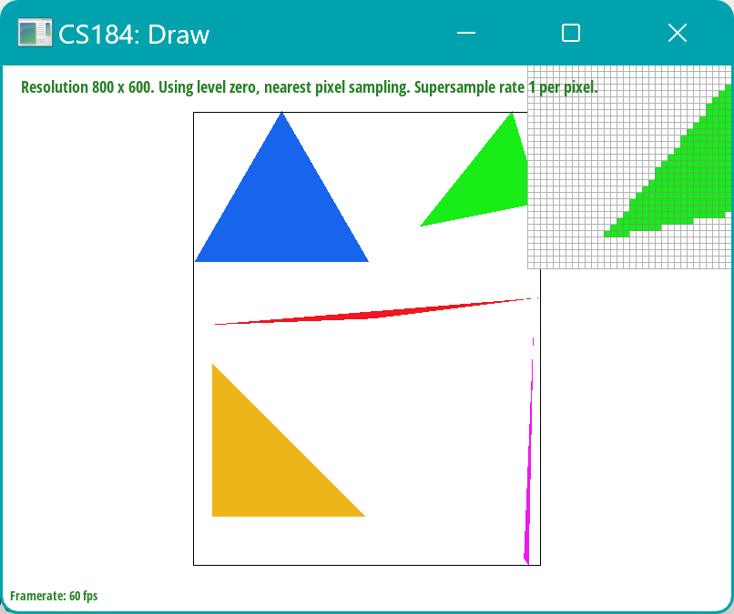
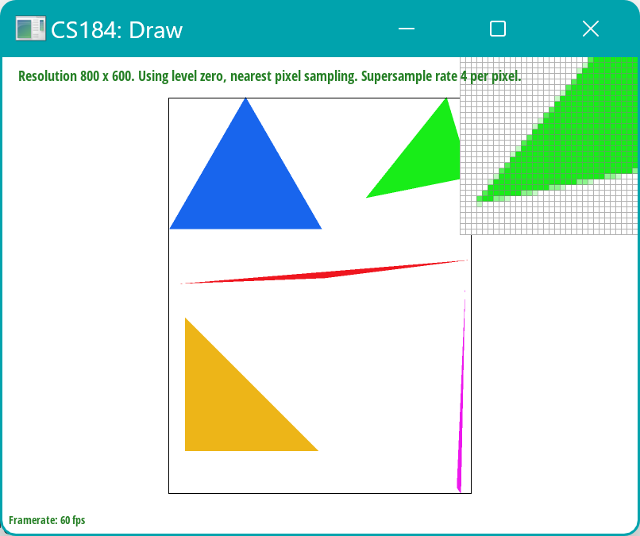
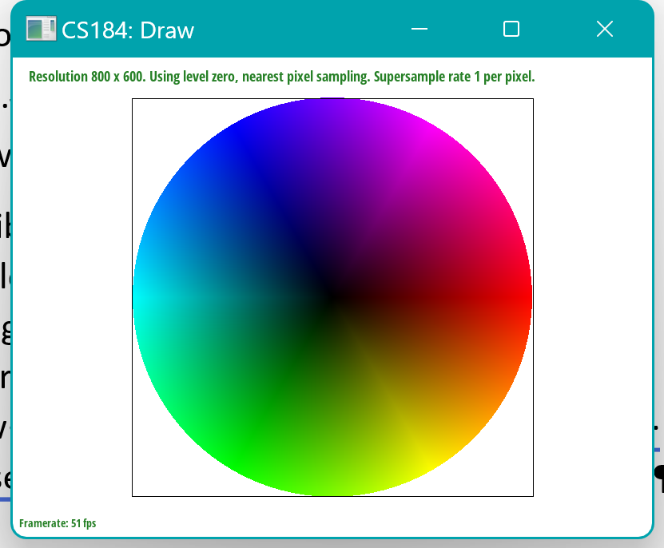
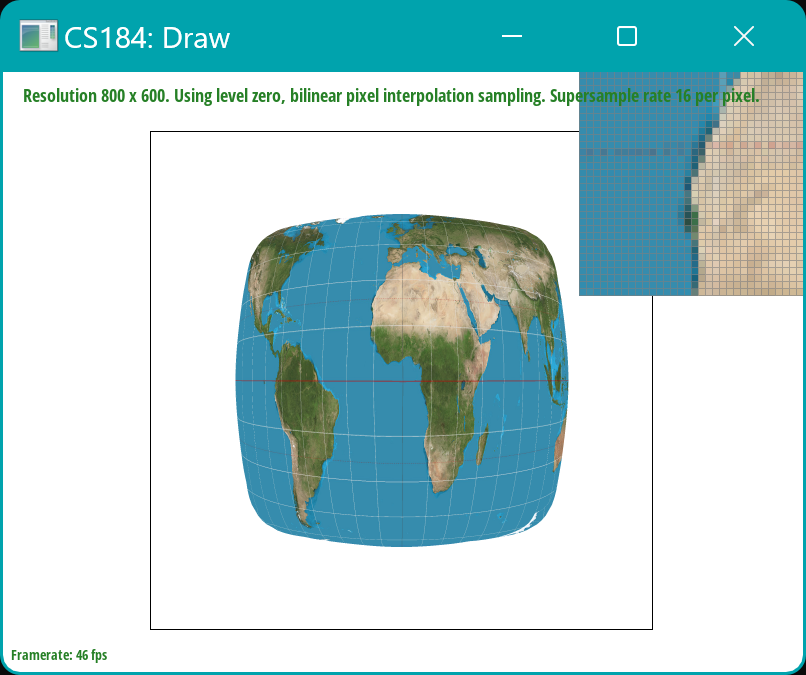
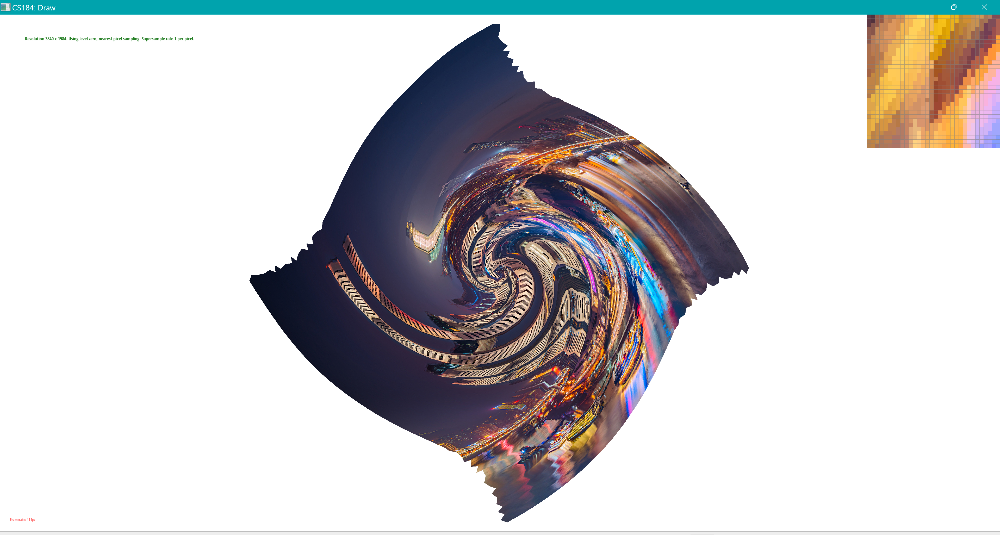
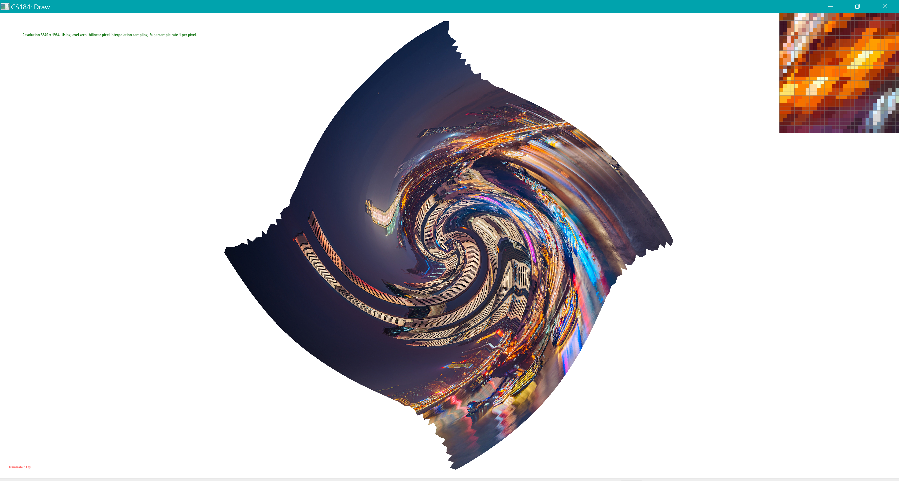
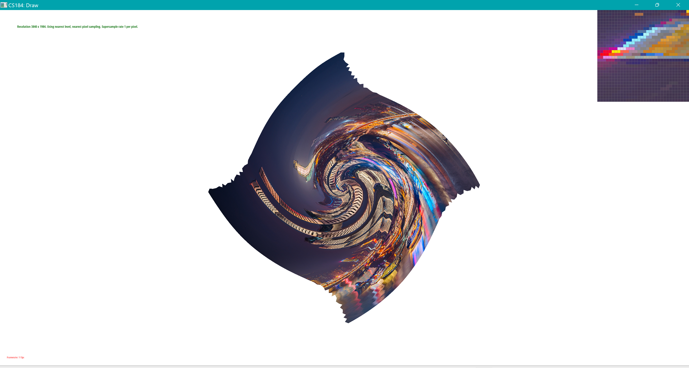
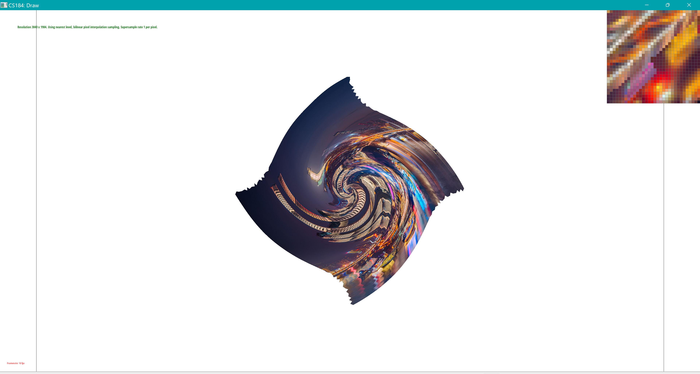

This assignment is in https://cs184.eecs.berkeley.edu/sp24/docs/hw1-spec
The github code repo is in https://github.com/cal-cs184-student/hw1-rasterizer-sp24-212
Submission doc is in https://cal-cs184-student.github.io/hw-webpages-sp24-Zzz212zzZ/hw1/index.html
In the first part of this homework, I rasterized triangles and then used supersampling to reduce the jaggy and, thus implementing the antialiasing mechanism. The third part of the 'transforms' is basically using the matrix to implement the transforms, including translating, scaling, and rotating. For the Barycentric coordinates, on the one hand, it provides a novel way to express the point coordinates using three vertices of a triangle; on the other hand, it provides a way for finding the mapped point coordinates in 'texture mapping'. Then comes the texture mapping: the nearest and bilinear pixel sample methods are implemented and compared in a picture, showing the advantages of bilinear pixel sample methods. Lastly, aside from the pixel sample method, level sample methods are also implemented in this part. In summary, this homework assignment deepen my understanding of the rasterization process.
isPointInsideTriangle to return True/False, indicating if we should assume this point appearing in this triangle and draw this pixel.
sample_rate parts, and each part is taken into consideration. In the rasterize_triangle function, all the sampled points are stored in the sample_buffer, then the averaging process within one pixel is conducted in the resolve_to_framebuffer function. Other than the rasterize_triangle function, the supersampling is also conducted in the fill_pixel function (this is because the figure border, like the dragon, is not drawn in a triangle. So in order to reduce the jaggy of the figure border, this function is also revised as well). The supersampling is useful because it takes possibly more contents in a pixel instead of only the center point (x+0.5, y+0.5). Overall, the pipeline could be: Collect all the sub-pixel colors within one pixel and store them in the sample_buffer -> average them and output the averaged color value in the frame_buffer.sample_rate of 1, 4, and 16, respectively. Obviously, a higher sample_rate is beneficial for reducing the aliasing and jaggy. This is because more points within a pixel are taken into account, so the edge won't be very sensitive whether it crosses the center of a pixel.

As shown below, the cubemen raised its arms to wave to me! By using the rotate transformation, the cubemen is more likely dancing~

sample_rate is higher. As for the difference between nearest and bilinear sampling methods, bilinear sampling can be beneficial for reducing the flicker. Although sometimes it makes the figure a little blurry, the overall performance is better than nearest_sampling.

For L_ZERO, it uses the base level texture without any mipmaps, using more memory; for level sample method L_NEAREST, it rounds the obtained level, which is calculated by the max distance between p_uv to p_dx_uv and p_uv to p_dy_uv. In terms of the L_LINEAR method, it uses a similar method to calculate the level, by using the upper round, lower round and the level itself.
I chose the png file, showing my home town Chongqing, China.
L_ZERO and P_NEAREST

L_ZERO and P_LINEAR

L_NEAREST and P_NEAREST

L_NEAREST and P_LINEAR
